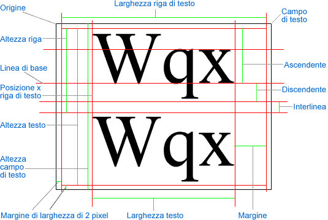

| Pacchetto | flash.text |
| Classe | public class TextLineMetrics |
| Ereditarietà | TextLineMetrics |
| Versione linguaggio: | ActionScript 3.0 |
| Versioni runtime: | AIR 1.0, Flash Player 9, Flash Lite 4 |
flash.text.TextField.getLineMetrics().
Per le misure relative al campo di testo contenente la riga di testo (ad esempio, la misura "TextField height" del diagramma), vedete flash.text.TextField.
Il diagramma seguente indica i punti e le misure di un campo di testo e della riga di testo contenuta in tale campo:

Elementi API correlati
 Nascondi proprietà pubbliche ereditate
Nascondi proprietà pubbliche ereditate Mostra proprietà pubbliche ereditate
Mostra proprietà pubbliche ereditate| Proprietà | Definito da | ||
|---|---|---|---|
| ascent : Number
Il valore ascent del testo è la lunghezza dalla base all'estremità superiore dell'altezza della riga, espressa in pixel. | TextLineMetrics | ||
 | constructor : Object
Un riferimento all'oggetto classe o alla funzione di costruzione per una determinata istanza di oggetto. | Object | |
| descent : Number
Il valore descent del testo è la lunghezza dalla base all'estremità inferiore della riga, espressa in pixel. | TextLineMetrics | ||
| height : Number
L'altezza del testo delle righe selezionate (non necessariamente di tutto il testo), espressa in pixel. | TextLineMetrics | ||
| leading : Number
Il valore leading è la misura della distanza verticale tra le righe di testo. | TextLineMetrics | ||
| width : Number
Il valore larghezza rappresenta la larghezza del testo delle righe selezionate (non necessariamente di tutto il testo), espressa in pixel. | TextLineMetrics | ||
| x : Number
Il valore x è la posizione sinistra del primo carattere espressa in pixel. | TextLineMetrics | ||
| Metodo | Definito da | ||
|---|---|---|---|
TextLineMetrics(x:Number, width:Number, height:Number, ascent:Number, descent:Number, leading:Number)
Crea un oggetto TextLineMetrics. | TextLineMetrics | ||
|
Indica se per un oggetto è definita una proprietà specifica. | Object | |
|
Indica se un'istanza della classe Object si trova nella catena di prototipi dell'oggetto specificato come parametro. | Object | |
|
Indica se la proprietà specificata esiste ed è enumerabile. | Object | |
|
Imposta la disponibilità di una proprietà dinamica per le operazioni cicliche. | Object | |
|
Restituisce la rappresentazione in formato stringa di questo oggetto, formattato in base alle convenzioni specifiche per le versioni localizzate. | Object | |
|
Restituisce la rappresentazione in formato stringa dell'oggetto specificato. | Object | |
|
Restituisce il valore di base dell'oggetto specificato. | Object | |
ascent | proprietà |
public var ascent:Number| Versione linguaggio: | ActionScript 3.0 |
| Versioni runtime: | AIR 1.0, Flash Player 9, Flash Lite 4 |
Il valore ascent del testo è la lunghezza dalla base all'estremità superiore dell'altezza della riga, espressa in pixel. Vedete la misura "Ascent" nel diagramma della panoramica di questa classe.
Elementi API correlati
descent | proprietà |
public var descent:Number| Versione linguaggio: | ActionScript 3.0 |
| Versioni runtime: | AIR 1.0, Flash Player 9, Flash Lite 4 |
Il valore descent del testo è la lunghezza dalla base all'estremità inferiore della riga, espressa in pixel. Vedete la misura "Descent" nel diagramma della panoramica di questa classe.
Elementi API correlati
height | proprietà |
public var height:Number| Versione linguaggio: | ActionScript 3.0 |
| Versioni runtime: | AIR 1.0, Flash Player 9, Flash Lite 4 |
L'altezza del testo delle righe selezionate (non necessariamente di tutto il testo), espressa in pixel. L'altezza della riga di testo non include l'altezza del margine. Vedete la misura "Line height" nel diagramma della panoramica di questa classe.
Elementi API correlati
leading | proprietà |
public var leading:Number| Versione linguaggio: | ActionScript 3.0 |
| Versioni runtime: | AIR 1.0, Flash Player 9, Flash Lite 4 |
Il valore leading è la misura della distanza verticale tra le righe di testo. Vedete la misura "Leading" nel diagramma della panoramica di questa classe.
Elementi API correlati
width | proprietà |
public var width:Number| Versione linguaggio: | ActionScript 3.0 |
| Versioni runtime: | AIR 1.0, Flash Player 9, Flash Lite 4 |
Il valore larghezza rappresenta la larghezza del testo delle righe selezionate (non necessariamente di tutto il testo), espressa in pixel. La larghezza della riga di testo non è uguale alla larghezza del campo di testo, ma rappresenta la larghezza del campo di testo, meno la larghezza del margine centrale di 4 pixel (2 pixel su ciascun lato). Vedete la misura "Text Line width" nel diagramma della panoramica di questa classe.
Elementi API correlati
x | proprietà |
public var x:Number| Versione linguaggio: | ActionScript 3.0 |
| Versioni runtime: | AIR 1.0, Flash Player 9, Flash Lite 4 |
Il valore x è la posizione sinistra del primo carattere espressa in pixel. Questo valore include le larghezze del margine, dell'eventuale rientro e del margine di larghezza. Vedete "Text Line x-position" nel diagramma della panoramica di questa classe.
Elementi API correlati
TextLineMetrics | () | Funzione di costruzione |
public function TextLineMetrics(x:Number, width:Number, height:Number, ascent:Number, descent:Number, leading:Number)| Versione linguaggio: | ActionScript 3.0 |
| Versioni runtime: | AIR 1.0, Flash Player 9, Flash Lite 4 |
Crea un oggetto TextLineMetrics. L'oggetto TextLineMetrics contiene le informazioni relative alle metriche del testo di una riga di testo in un campo. Gli oggetti di questa classe vengono restituiti dal metodo flash.text.TextField.getLineMetrics().
Vedete il diagramma nella panoramica di questa classe per una spiegazione delle proprietà in contesto.
Parametrix:Number — La posizione sinistra del primo carattere espressa in pixel.
| |
width:Number — La larghezza del testo delle righe selezionate (non necessariamente di tutto il testo), espressa in pixel.
| |
height:Number — L'altezza del testo delle righe selezionate (non necessariamente di tutto il testo), espressa in pixel.
| |
ascent:Number — La lunghezza dalla base all'estremità superiore dell'altezza della riga, espressa in pixel.
| |
descent:Number — La lunghezza dalla base all'estremità inferiore della riga, espressa in pixel.
| |
leading:Number — La misura della distanza verticale tra le righe di testo.
|
Elementi API correlati
- Create una proprietà denominata
labeldel tipo TextField. - La funzione di costruzione chiama
configureAssets(), che esegue le seguenti operazioni:- Imposta l'allineamento dello stage in alto a sinistra e senza scala.
- Crea un nuovo oggetto TextField denominato
label. - Abilita lo sfondo di
labele imposta il bianco come colore. - Consente la distribuzione del testo di
labelsu più righe mediante la funzione di a capo automatico. - Assegna il risultato di una chiamata a
getLabelText()alla proprietàtextdilabel. Il metodogetLabelText()crea una variabile di tipo XML e la assegna a un nodo XML denominatobody, che viene compilato con una frase lunga. - Aggiunge
labelall'elenco di visualizzazione medianteaddChild().
- Viene quindi aggiunto un metodo listener per gli eventi
resizeeseguiti sullo stage e viene denominatoresizeHandler(). Ogni volta che vengono modificate le dimensioni della finestra di Flash Player, viene inviato l'eventoRESIZEe vengono eseguite le seguenti operazioni:- Viene chiamato il metodo
draw()per garantire chelabelvenga visualizzata al centro dello stage e sia racchiusa da un buffer di 10 pixel. setTimeout()quindi esegueshowMetrics()dopo un breve ritardo. Il ritardo viene aggiunto in quanto la metrica relativa alla riga non viene aggiornata fino al completamento dell'eventoRESIZEe al ridisegno completo dello stage.showMetrics()assegna una variabile TextLineMetrics denominatametricsal risultato di una chiamata agetLineMetrics()e questa variabile viene quindi passata a una nuova istanza di un'istanza LineMetricsReader denominatareader. Le due variabili vengono quindi utilizzate all'interno di chiamate atrace()per la stampa della prima (e unica) riga dilabele delle informazioni fornite dall'istanza LineMetricsReader mediante il relativo metodotoString().
- Viene chiamato il metodo
- La funzione di costruzione forza l'invio singolo dell'evento
resizeper forzare il disegno corretto dilabelal primo caricamento del file SWF.
package {
import flash.display.Sprite;
import flash.display.StageAlign;
import flash.display.StageScaleMode;
import flash.events.*;
import flash.text.TextField;
import flash.text.TextLineMetrics;
import flash.utils.setTimeout;
public class TextLineMetricsExample extends Sprite {
private var gutter:int = 10;
private var label:TextField;
public function TextLineMetricsExample() {
configureAssets();
configureListeners();
resizeHandler(new Event(Event.RESIZE));
}
private function showMetrics():void {
var metrics:TextLineMetrics = label.getLineMetrics(0);
var reader:LineMetricsReader = new LineMetricsReader(metrics);
trace("lineText: " + label.getLineText(0));
trace("metrics: " + reader);
}
private function configureAssets():void {
stage.align = StageAlign.TOP_LEFT;
stage.scaleMode = StageScaleMode.NO_SCALE;
label = new TextField();
label.background = true;
label.backgroundColor = 0xFFFFFF;
label.multiline = true;
label.wordWrap = true;
label.text = getLabelText();
addChild(label);
}
private function configureListeners():void {
stage.addEventListener(Event.RESIZE, resizeHandler);
}
private function resizeHandler(event:Event):void {
draw();
setTimeout(showMetrics, 100);
}
private function draw():void {
label.x = gutter;
label.y = gutter;
label.width = stage.stageWidth - (gutter * 2);
label.height = stage.stageHeight - (gutter * 2);
}
private function getLabelText():String {
var text:XML = <body>The Flex product line enables developers to build rich Internet applications that blend the responsiveness of desktop software, the cross-platform reach of the web, and the expressiveness of the Flash Platform.</body>
return text.toString();
}
}
}
import flash.text.TextLineMetrics;
class LineMetricsReader {
private var metrics:TextLineMetrics;
public function LineMetricsReader(metrics:TextLineMetrics) {
this.metrics = metrics;
}
public function toString():String {
return "[TextLineMetrics ascent:" + metrics.ascent
+ ", descent:" + metrics.descent
+ ", leading:" + metrics.leading
+ ", width:" + metrics.width
+ ", height:" + metrics.height
+ ", x:" + metrics.x
+ "]";
}
}
Tue Jun 12 2018, 02:44 PM Z